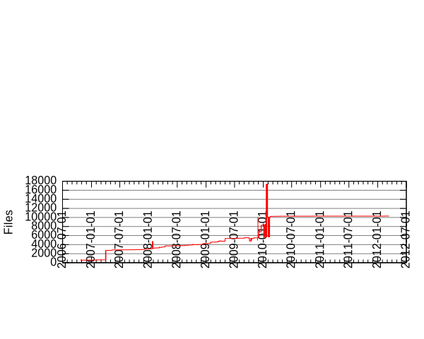

Files
- Total files
- 10316
- Total lines
- 357671
- Average file size
- 3467.15 bytes

| Extension | Files (%) | Lines (%) | Lines/file |
|---|
| 2662 (25.80%) | 327213 (91.48%) | 122 |
| 6 | 1 (0.01%) | 96 (0.03%) | 96 |
| G15 | 1 (0.01%) | 33 (0.01%) | 33 |
| LGS | 1 (0.01%) | 33 (0.01%) | 33 |
| LIB | 4 (0.04%) | 2695 (0.75%) | 673 |
| O | 2 (0.02%) | 17 (0.00%) | 8 |
| PL | 1 (0.01%) | 7 (0.00%) | 7 |
| PNG | 33 (0.32%) | 11000 (3.08%) | 333 |
| RES | 1 (0.01%) | 1 (0.00%) | 1 |
| a | 4 (0.04%) | 946 (0.26%) | 236 |
| ac | 1 (0.01%) | 141 (0.04%) | 141 |
| act | 2 (0.02%) | 0 (0.00%) | 0 |
| am | 4 (0.04%) | 1036 (0.29%) | 259 |
| aps | 1 (0.01%) | 34 (0.01%) | 34 |
| awpn | 16 (0.16%) | 245 (0.07%) | 15 |
| bat | 3 (0.03%) | 32 (0.01%) | 10 |
| bmp | 87 (0.84%) | 2487 (0.70%) | 28 |
| c | 130 (1.26%) | 43575 (12.18%) | 335 |
| cbp | 1 (0.01%) | 1066 (0.30%) | 1066 |
| cc | 172 (1.67%) | 68826 (19.24%) | 400 |
| cfg | 96 (0.93%) | 1634 (0.46%) | 17 |
| cmake | 2 (0.02%) | 734 (0.21%) | 367 |
| cp | 1 (0.01%) | 81 (0.02%) | 81 |
| cpp | 332 (3.22%) | 152568 (42.66%) | 459 |
| css | 2 (0.02%) | 296 (0.08%) | 148 |
| dat | 6 (0.06%) | 2468 (0.69%) | 411 |
| deb | 1 (0.01%) | 22 (0.01%) | 22 |
| def | 2 (0.02%) | 135 (0.04%) | 67 |
| depend | 1 (0.01%) | 6655 (1.86%) | 6655 |
| desktop | 2 (0.02%) | 18 (0.01%) | 9 |
| dev | 1 (0.01%) | 2869 (0.80%) | 2869 |
| diff | 1 (0.01%) | 98 (0.03%) | 98 |
| dll | 6 (0.06%) | 12490 (3.49%) | 2081 |
| dmp | 17 (0.16%) | 366 (0.10%) | 21 |
| dsp | 3 (0.03%) | 1213 (0.34%) | 404 |
| dsw | 3 (0.03%) | 87 (0.02%) | 29 |
| exe | 12 (0.12%) | 8635 (2.41%) | 719 |
| exp | 195 (1.89%) | 1543 (0.43%) | 7 |
| gif | 3 (0.03%) | 53 (0.01%) | 17 |
| gitignore | 1 (0.01%) | 1 (0.00%) | 1 |
| graffle | 1 (0.01%) | 2489 (0.70%) | 2489 |
| gss | 29 (0.28%) | 2284 (0.64%) | 78 |
| guess | 1 (0.01%) | 1500 (0.42%) | 1500 |
| gyp | 7 (0.07%) | 440 (0.12%) | 62 |
| gypi | 6 (0.06%) | 1469 (0.41%) | 244 |
| h | 625 (6.06%) | 98689 (27.59%) | 157 |
| hpp | 28 (0.27%) | 5957 (1.67%) | 212 |
| html | 8 (0.08%) | 1641 (0.46%) | 205 |
| i | 2 (0.02%) | 1622 (0.45%) | 811 |
| icns | 3 (0.03%) | 940 (0.26%) | 313 |
| ico | 6 (0.06%) | 1659 (0.46%) | 276 |
| idb | 2 (0.02%) | 398 (0.11%) | 199 |
| in | 4 (0.04%) | 6722 (1.88%) | 1680 |
| ini | 1 (0.01%) | 102 (0.03%) | 102 |
| install | 1 (0.01%) | 13 (0.00%) | 13 |
| java | 8 (0.08%) | 3255 (0.91%) | 406 |
| lev | 2 (0.02%) | 2 (0.00%) | 1 |
| lfn | 3 (0.03%) | 45 (0.01%) | 15 |
| lft | 9 (0.09%) | 15 (0.00%) | 1 |
| lgs | 4 (0.04%) | 619 (0.17%) | 154 |
| lib | 46 (0.45%) | 49883 (13.95%) | 1084 |
| linux | 1 (0.01%) | 67 (0.02%) | 67 |
| lua | 108 (1.05%) | 12706 (3.55%) | 117 |
| lxl | 60 (0.58%) | 89722 (25.09%) | 1495 |
| m | 9 (0.09%) | 2809 (0.79%) | 312 |
| m4 | 7 (0.07%) | 9280 (2.59%) | 1325 |
| manifest | 2 (0.02%) | 26 (0.01%) | 13 |
| manpages | 1 (0.01%) | 1 (0.00%) | 1 |
| markdown | 1 (0.01%) | 47 (0.01%) | 47 |
| mc | 1 (0.01%) | 30 (0.01%) | 30 |
| md | 1 (0.01%) | 106 (0.03%) | 106 |
| menu | 1 (0.01%) | 3 (0.00%) | 3 |
| mfx | 24 (0.23%) | 9 (0.00%) | 0 |
| mingw | 1 (0.01%) | 86 (0.02%) | 86 |
| mm | 18 (0.17%) | 5805 (1.62%) | 322 |
| obj | 1928 (18.69%) | 30210 (8.45%) | 15 |
| ogg | 767 (7.44%) | 77999 (21.81%) | 101 |
| old | 1 (0.01%) | 2317 (0.65%) | 2317 |
| osx | 1 (0.01%) | 80 (0.02%) | 80 |
| out | 8 (0.08%) | 22976 (6.42%) | 2872 |
| pas | 1 (0.01%) | 391 (0.11%) | 391 |
| pbxproj | 7 (0.07%) | 11308 (3.16%) | 1615 |
| pbxuser | 1 (0.01%) | 636 (0.18%) | 636 |
| pch | 2 (0.02%) | 15 (0.00%) | 7 |
| pdb | 3 (0.03%) | 3356 (0.94%) | 1118 |
| pg | 2 (0.02%) | 344 (0.10%) | 172 |
| php | 20 (0.19%) | 4038 (1.13%) | 201 |
| plist | 8 (0.08%) | 223 (0.06%) | 27 |
| png | 1990 (19.29%) | 121039 (33.84%) | 60 |
| png_ | 1 (0.01%) | 33 (0.01%) | 33 |
| png__ | 1 (0.01%) | 33 (0.01%) | 33 |
| prj | 1 (0.01%) | 67 (0.02%) | 67 |
| pro | 1 (0.01%) | 43 (0.01%) | 43 |
| proto | 1 (0.01%) | 207 (0.06%) | 207 |
| psd | 2 (0.02%) | 5122 (1.43%) | 2561 |
| py | 217 (2.10%) | 60172 (16.82%) | 277 |
| pyd | 14 (0.14%) | 446 (0.12%) | 31 |
| rb | 1 (0.01%) | 4 (0.00%) | 4 |
| rc | 2 (0.02%) | 274 (0.08%) | 137 |
| res | 1 (0.01%) | 737 (0.21%) | 737 |
| s | 1 (0.01%) | 111 (0.03%) | 111 |
| settings | 1 (0.01%) | 5 (0.00%) | 5 |
| sh | 25 (0.24%) | 9376 (2.62%) | 375 |
| skn | 1 (0.01%) | 110 (0.03%) | 110 |
| sln | 1 (0.01%) | 20 (0.01%) | 20 |
| solaris | 1 (0.01%) | 58 (0.02%) | 58 |
| stabs | 1 (0.01%) | 129 (0.04%) | 129 |
| strings | 25 (0.24%) | 327 (0.09%) | 13 |
| sub | 1 (0.01%) | 1616 (0.45%) | 1616 |
| svg | 2 (0.02%) | 2003 (0.56%) | 1001 |
| svn-base | 5 (0.05%) | 1091 (0.31%) | 218 |
| svn/format | 1 (0.01%) | 1 (0.00%) | 1 |
| sym | 5 (0.05%) | 19435 (5.43%) | 3887 |
| ttf | 1 (0.01%) | 793 (0.22%) | 793 |
| txt | 276 (2.68%) | 7975 (2.23%) | 28 |
| vcproj | 5 (0.05%) | 1246 (0.35%) | 249 |
| ver | 1 (0.01%) | 0 (0.00%) | 0 |
| wav | 1 (0.01%) | 558 (0.16%) | 558 |
| workspace | 1 (0.01%) | 6 (0.00%) | 6 |
| wpn | 92 (0.89%) | 1860 (0.52%) | 20 |
| wpn_ | 2 (0.02%) | 53 (0.01%) | 26 |
| wps | 1 (0.01%) | 38 (0.01%) | 38 |
| xbm | 1 (0.01%) | 75 (0.02%) | 75 |
| xcconfig | 3 (0.03%) | 123 (0.03%) | 41 |
| xcf | 1 (0.01%) | 952 (0.27%) | 952 |
| xib | 2 (0.02%) | 4888 (1.37%) | 2444 |
| xml | 30 (0.29%) | 448 (0.13%) | 14 |
| xpm | 1 (0.01%) | 200 (0.06%) | 200 |
| xsl | 1 (0.01%) | 132 (0.04%) | 132 |